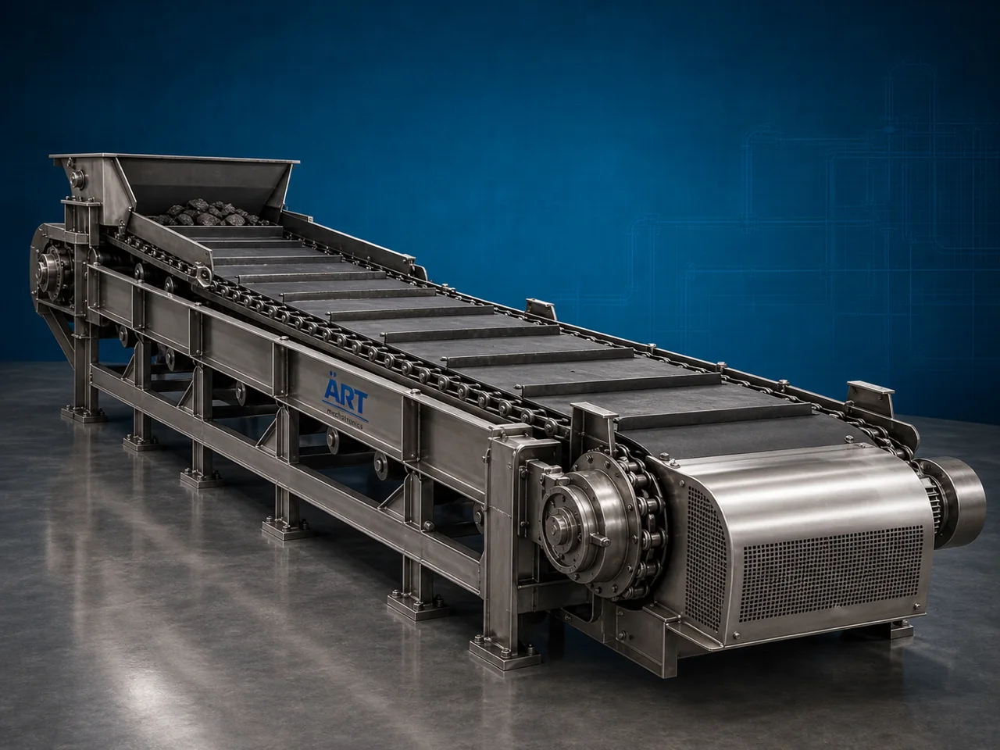

Apron Conveyor Machine (Industrial Heavy Duty Apron Material Handling System)
An Apron Conveyor Machine, also known as an Apron Feeder Conveyor or Industrial Apron Conveyor System, is a heavy-duty industrial material handling equipment designed for transporting large, abrasive, hot, sharp, heavy, and bulk materials continuously using overlapping steel pans or apron plates mounted on a chain-driven conveyor mechanism.

About the Apron Conveyor
Apron conveyor systems are widely used for:
- Heavy-duty bulk material conveying
- High-impact material handling
- Mining and quarry operations
- Hot material transportation
- Feeding crushers and hoppers
- Industrial raw material transfer
The machine improves:
- Material handling efficiency
- Production continuity
- Heavy load transportation capability
- Equipment durability
- Industrial automation
- Operational reliability
Unlike conventional belt conveyors, apron conveyors use:
- Heavy steel apron plates
- Chain-driven conveying systems
- Reinforced structural frames
- High-load carrying mechanisms
to handle materials under extreme industrial conditions.
Apron conveyor machines are widely used in industries such as:
Mining industries
Cement plants
Steel industries
Power plants
Quarry operations
Recycling plants
Foundries
Bulk material handling industries
where continuous heavy-duty material transportation is essential.
The machine is highly suitable for:
- Ore conveying
- Coal handling
- Clinker transfer
- Hot material transportation
- Crusher feeding
- Heavy bulk material handling
ART Mechatronics offers high-performance apron conveyor machines, engineered for continuous industrial operation, heavy-duty load handling, rugged construction, and reliable long-term performance.
Working Principle of Apron Conveyor Machine
Heavy bulk materials are loaded onto steel apron plates at conveyor inlet section
Motor-driven chain system moves interconnected apron plates continuously
Heavy-duty apron pans carry materials safely along conveyor path
Machine handles:
- Ore
- Coal
- Clinker
- Stones
- Hot materials
- Scrap materials
- Heavy industrial products under tough industrial conditions.
Reinforced apron plates withstand: Abrasive materials High temperatures Sharp-edged products Heavy impact loading
Conveyor integrates with: Crushers Hoppers Feeders Storage systems Bulk handling plants
Materials discharged continuously at desired process or transfer point
Types of Apron Conveyor Machines
- 1. Heavy Duty Apron Conveyor
Designed for: ✔ Mining and quarry operations
- 2. Apron Feeder Conveyor
Used for: ✔ Controlled feeding of crushers and processing equipment
- 3. Steel Apron Conveyor
Uses: ✔ Heavy steel apron plates for high-load material handling.
- 4. Hot Material Apron Conveyor
Suitable for: ✔ Hot clinker and heated material transfer
- 5. Inclined Apron Conveyor
Designed for: ✔ Elevated heavy material transportation
- 6. Industrial Chain Apron Conveyor
Suitable for: ✔ Continuous industrial bulk handling systems
Industries Using Apron Conveyor Machine
⛏️ Mining Industry Ore and mineral transportation systems 🏗️ Cement Industry Clinker and raw material conveying systems 🏭 Steel Industry Hot metal and scrap material handling systems ⚡ Power Plant Industry Coal handling and transfer systems 🪨 Quarry Industry Stone and aggregate conveying systems ♻️ Recycling Industry Scrap and waste material transportation systems 🔥 Foundry Industry Hot casting and heavy material handling systems 🚢 Bulk Material Handling Industry Heavy industrial product conveying systems
Features & Advantages
- Heavy-duty industrial material handling capability
- Suitable for abrasive and hot materials
- Rugged steel apron plate construction
- Continuous industrial operation
- High load carrying capacity
- Long service life under harsh conditions
- Reliable chain-driven conveying system
- Low maintenance and durable design
- Suitable for impact and heavy-duty applications
Technical Highlights
Conveyor Type: Apron feeder conveyor Heavy-duty apron conveyor Inclined apron conveyor Construction: Heavy-duty steel structure Conveyor Surface: Steel apron plates Overlapping pans Drive System: Chain drive system Geared motor drive Material Handling: Hot materials Abrasive materials Heavy bulk materials Automation: Semi-automatic Fully automatic PLC-based systems
Turnkey Apron Conveying Solutions
ART Mechatronics offers: Complete apron conveyor systems Crusher feeding solutions Heavy-duty bulk material handling systems Mining and cement plant integration Installation & commissioning After-sales service & AMC
Why Choose Art Mechatronics
Expertise in heavy-duty industrial material handling systems Customized conveyor solutions for harsh industrial environments High-performance and rugged industrial construction Energy-efficient and reliable conveying systems Proven industrial performance across sectors
Applications
Mining Industries Cement Plants Steel Industries Power Plants Quarry Operations Recycling Facilities
Related Conveying & Handling machines
Get pricing & specs for the Apron Conveyor
Share the product, target capacity, current process and plant location. These details help our engineers discuss the right machine or line configuration.
One partner, from design to start-up
ART Mechatronics designs, manufactures, installs and commissions your Apron Conveyor solution with regional presence in India, UAE and Thailand.